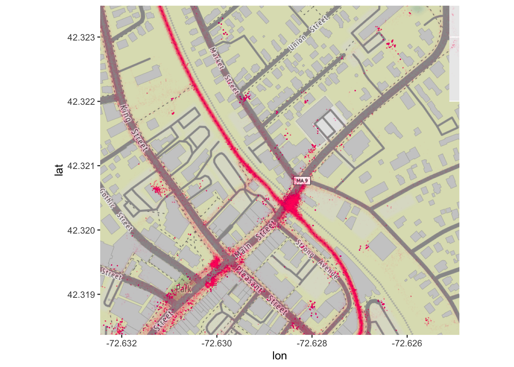

11 Animation
We also created an animation of an intersection in downtown Northampton.
## Warning: package 'gganimate' was built under R version 4.0.2##
## Attaching package: 'gganimate'## The following object is masked from 'package:raster':
##
## animateoctober2019 <- october2019 %>% mutate("month" = "October 2019")
november2019 <- november2019 %>% mutate("month" = "November 2019")
june2020 <- june2020 %>% mutate("month" = "June 2020")
july2020 <- july2020 %>% mutate("month" = "July 2020")
august2020 <- august2020 %>% mutate("month" = "August 2020")
dataall <- rbind(october2019, november2019, june2020, july2020, august2020)
northampton2 <- get_map(location = c(left = -72.632453, bottom = 42.318369, right = -72.62490, top = 42.323489), source = "stamen", maptype = "terrain", zoom = 17)## Source : http://tile.stamen.com/terrain/17/39091/48497.png## Source : http://tile.stamen.com/terrain/17/39092/48497.png## Source : http://tile.stamen.com/terrain/17/39093/48497.png## Source : http://tile.stamen.com/terrain/17/39094/48497.png## Not Found (HTTP 404). Failed to aquire tile /terrain/17/39094/48497.png.
## Source : http://tile.stamen.com/terrain/17/39091/48498.png
## Source : http://tile.stamen.com/terrain/17/39092/48498.png
## Source : http://tile.stamen.com/terrain/17/39093/48498.png
## Source : http://tile.stamen.com/terrain/17/39094/48498.png
## Source : http://tile.stamen.com/terrain/17/39091/48499.png
## Source : http://tile.stamen.com/terrain/17/39092/48499.png
## Source : http://tile.stamen.com/terrain/17/39093/48499.png
## Source : http://tile.stamen.com/terrain/17/39094/48499.pngdataall <- dataall %>% filter(longitude >= -72.632453 & longitude <= -72.62490,
latitude >= 42.318369 & latitude <= 42.323489) %>%
mutate("monthfct" = as.factor(month))
dataall <- dataall %>% mutate(monthfct = fct_relevel(monthfct, c("october2019", "november2019", "june2020", "july2020", "august2020")))## Warning: Problem with `mutate()` input `monthfct`.
## x Unknown levels in `f`: october2019, november2019, june2020, july2020, august2020
## ℹ Input `monthfct` is `fct_relevel(...)`.## Warning: Unknown levels in `f`: october2019, november2019, june2020, july2020,
## august2020animap <- ggmap(northampton2)+
geom_point(aes(x = longitude, y = latitude), color = "#f54287", alpha = 0.01,
size = 0.03, data = dataall)
animap
nohogif <- animap+
transition_states(
monthfct,
transition_length = 1,
state_length = 3) +
ease_aes('bounce-in-out') +
labs(subtitle = "{closest_state}",
x = "longitude",
y = "latitude",
title = "Northampton Bike Traffic",
caption = "Source: ValleyBike. Bike trackers collected coordinate data
every five seconds. 1363614 observations across two years are shown here.")
nohogif